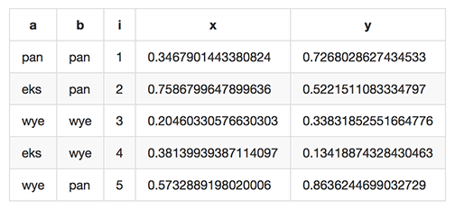

File formats¶
Miller handles name-indexed data using several formats: some you probably know by name, such as CSV, TSV, JSON, and JSON Lines -- and other formats you're likely already seeing and using in your structured data.
Additionally, Miller gives you the option of including comments within your data.
Examples¶
mlr help file-formats
CSV/CSV-lite: comma-separated values with separate header line
TSV: same but with tabs in places of commas
+---------------------+
| apple,bat,cog |
| 1,2,3 | Record 1: "apple":"1", "bat":"2", "cog":"3"
| 4,5,6 | Record 2: "apple":"4", "bat":"5", "cog":"6"
+---------------------+
JSON (array of objects):
+---------------------+
| [ |
| { |
| "apple": 1, | Record 1: "apple":"1", "bat":"2", "cog":"3"
| "bat": 2, |
| "cog": 3 |
| }, |
| { |
| "dish": { | Record 2: "dish.egg":"7",
| "egg": 7, | "dish.flint":"8", "garlic":""
| "flint": 8 |
| }, |
| "garlic": "" |
| } |
| ] |
+---------------------+
JSON Lines (sequence of one-line objects):
+------------------------------------------------+
| {"apple": 1, "bat": 2, "cog": 3} |
| {"dish": {"egg": 7, "flint": 8}, "garlic": ""} |
+------------------------------------------------+
Record 1: "apple":"1", "bat":"2", "cog":"3"
Record 2: "dish:egg":"7", "dish:flint":"8", "garlic":""
PPRINT: pretty-printed tabular
+---------------------+
| apple bat cog |
| 1 2 3 | Record 1: "apple:"1", "bat":"2", "cog":"3"
| 4 5 6 | Record 2: "apple":"4", "bat":"5", "cog":"6"
+---------------------+
Markdown tabular (supported for output only):
+-----------------------+
| | apple | bat | cog | |
| | --- | --- | --- | |
| | 1 | 2 | 3 | | Record 1: "apple:"1", "bat":"2", "cog":"3"
| | 4 | 5 | 6 | | Record 2: "apple":"4", "bat":"5", "cog":"6"
+-----------------------+
XTAB: pretty-printed transposed tabular
+---------------------+
| apple 1 | Record 1: "apple":"1", "bat":"2", "cog":"3"
| bat 2 |
| cog 3 |
| |
| dish 7 | Record 2: "dish":"7", "egg":"8"
| egg 8 |
+---------------------+
DKVP: delimited key-value pairs (Miller default format)
+---------------------+
| apple=1,bat=2,cog=3 | Record 1: "apple":"1", "bat":"2", "cog":"3"
| dish=7,egg=8,flint | Record 2: "dish":"7", "egg":"8", "3":"flint"
+---------------------+
NIDX: implicitly numerically indexed (Unix-toolkit style)
+---------------------+
| the quick brown | Record 1: "1":"the", "2":"quick", "3":"brown"
| fox jumped | Record 2: "1":"fox", "2":"jumped"
+---------------------+
CSV/TSV/ASV/USV/etc.¶
When mlr is invoked with the --csv or --csvlite option, key names are found on the first record and values are taken from subsequent records. This includes the case of CSV-formatted files. See Record Heterogeneity for how Miller handles changes of field names within a single data stream.
Miller has record separator RS and field separator FS, just as awk does. (See also the separators page.)
TSV (tab-separated values): FS is tab and RS is newline (or carriage return + linefeed for
Windows). On input, if fields have \r, \n, \t, or \\, those are decoded as carriage return,
newline, tab, and backslash, respectively. On output, the reverse is done -- for example, if a field
has an embedded newline, that newline is replaced by \n.
ASV (ASCII-separated values): the flags --asv, --iasv, --oasv, --asvlite, --iasvlite, and --oasvlite are analogous except they use ASCII FS and RS 0x1f and 0x1e, respectively.
USV (Unicode-separated values): likewise, the flags --usv, --iusv, --ousv, --usvlite, --iusvlite, and --ousvlite use Unicode FS and RS U+241F (UTF-8 0x0xe2909f) and U+241E (UTF-8 0xe2909e), respectively.
Miller's --csv flag supports RFC-4180 CSV. This includes CRLF line-terminators by default, regardless of platform.
Here are the differences between CSV and CSV-lite:
-
CSV-lite naively splits lines on newline, and fields on comma -- embedded commas and newlines are not escaped in any way.
-
CSV supports RFC-4180-style double-quoting, including the ability to have commas and/or LF/CRLF line-endings contained within an input field; CSV-lite does not.
-
CSV does not allow heterogeneous data; CSV-lite does (see also Record Heterogeneity).
-
TSV-lite is simply CSV-lite with field separator set to tab instead of comma. In particular, no encode/decode of
\r,\n,\t, or\\is done. -
CSV-lite allows changing FS and/or RS to any values, perhaps multi-character.
-
In short, use-cases for CSV-lite and TSV-lite are often found when dealing with CSV/TSV files which are formatted in some non-standard way -- you have a little more flexibility available to you. (As an example of this flexibility: ASV and USV are nothing more than CSV-lite with different values for FS and RS.)
CSV, TSV, CSV-lite, and TSV-lite have in common the --implicit-csv-header flag for input and the --headerless-csv-output flag for output.
See also the --lazy-quotes flag which can help with CSV files which are not fully compliant with RFC-4180.
JSON¶
JSON is a format which supports scalars (numbers, strings, boolean, etc.) as well as "objects" (maps) and "arrays" (lists), while Miller is a tool for handling tabular data only. By tabular JSON I mean the data is either a sequence of one or more objects, or an array consisting of one or more objects. Miller treats JSON objects as name-indexed records.
This means Miller cannot (and should not) handle arbitrary JSON. In practice,
though, Miller can handle single JSON objects as well as list of them. The only
kinds of JSON that are unmillerable are single scalars (e.g. file contents 3)
and arrays of non-object (e.g. file contents [1,2,3,4,5]). Check out
jq for a tool which handles all valid JSON.
In short, if you have tabular data represented in JSON -- lists of objects,
either with or without outermost [...] -- [then Miller can handle that for
you.
Single-level JSON objects¶
An array of single-level objects is, quite simply, a table:
mlr --json head -n 2 then cut -f color,shape data/json-example-1.json
[
{
"color": "yellow",
"shape": "triangle"
},
{
"color": "red",
"shape": "square"
}
]
mlr --json head -n 2 then cut -f color,u,v data/json-example-1.json
[
{
"color": "yellow",
"u": 0.632170,
"v": 0.988721
},
{
"color": "red",
"u": 0.219668,
"v": 0.001257
}
]
Single-level JSON data goes back and forth between JSON and tabular formats in the direct way:
mlr --ijson --opprint head -n 2 then cut -f color,u,v data/json-example-1.json
color u v yellow 0.632170 0.988721 red 0.219668 0.001257
mlr --ijson --opprint cat data/json-example-1.json
color shape flag i u v w x yellow triangle 1 11 0.632170 0.988721 0.436498 5.798188 red square 1 15 0.219668 0.001257 0.792778 2.944117 red circle 1 16 0.209017 0.290052 0.138103 5.065034 red square 0 48 0.956274 0.746720 0.775542 7.117831 purple triangle 0 51 0.435535 0.859129 0.812290 5.753095 red square 0 64 0.201551 0.953110 0.771991 5.612050 purple triangle 0 65 0.684281 0.582372 0.801405 5.805148 yellow circle 1 73 0.603365 0.423708 0.639785 7.006414 yellow circle 1 87 0.285656 0.833516 0.635058 6.350036 purple square 0 91 0.259926 0.824322 0.723735 6.854221
Nested JSON objects¶
Additionally, Miller can tabularize nested objects by concatenating keys. If your processing has input as well as output in JSON format, JSON structure is preserved throughout the processing:
mlr --json head -n 2 data/json-example-2.json
[
{
"flag": 1,
"i": 11,
"attributes": {
"color": "yellow",
"shape": "triangle"
},
"values": {
"u": 0.632170,
"v": 0.988721,
"w": 0.436498,
"x": 5.798188
}
},
{
"flag": 1,
"i": 15,
"attributes": {
"color": "red",
"shape": "square"
},
"values": {
"u": 0.219668,
"v": 0.001257,
"w": 0.792778,
"x": 2.944117
}
}
]
But if the input format is JSON and the output format is not (or vice versa) then key-concatenation applies:
mlr --ijson --opprint head -n 4 data/json-example-2.json
flag i attributes.color attributes.shape values.u values.v values.w values.x 1 11 yellow triangle 0.632170 0.988721 0.436498 5.798188 1 15 red square 0.219668 0.001257 0.792778 2.944117 1 16 red circle 0.209017 0.290052 0.138103 5.065034 0 48 red square 0.956274 0.746720 0.775542 7.117831
This is discussed in more detail on the page Flatten/unflatten: JSON vs. tabular formats.
Use --jflatsep yourseparatorhere to specify the string used for key concatenation: this defaults to a single dot.
JSON-in-CSV¶
It's quite common to have CSV data which contains stringified JSON as a column. See the JSON parse and stringify section for ways to decode these in Miller.
JSON Lines¶
JSON Lines is similar to JSON, except:
- UTF-8 encoding must be supported
- There is no outermost
[...] - Each record is on a single line
Miller handles this:
mlr --icsv --ojson head -n 2 example.csv
[
{
"color": "yellow",
"shape": "triangle",
"flag": "true",
"k": 1,
"index": 11,
"quantity": 43.6498,
"rate": 9.8870
},
{
"color": "red",
"shape": "square",
"flag": "true",
"k": 2,
"index": 15,
"quantity": 79.2778,
"rate": 0.0130
}
]
mlr --icsv --ojsonl head -n 2 example.csv
{"color": "yellow", "shape": "triangle", "flag": "true", "k": 1, "index": 11, "quantity": 43.6498, "rate": 9.8870}
{"color": "red", "shape": "square", "flag": "true", "k": 2, "index": 15, "quantity": 79.2778, "rate": 0.0130}
Note that for input data, either is acceptable: whether you use --ijson or --ijsonl, Miller
won't reject your input data for lack of outermost [...], nor will it reject your data for placement
of newlines. The difference is on output: using --ojson, you get outermost [...] and pretty-printed
records; using --ojsonl, you get no outermost [...], and one line per record.
PPRINT: Pretty-printed tabular¶
Miller's pretty-print format is like CSV, but column-aligned. For example, compare
mlr --ocsv cat data/small
a,b,i,x,y pan,pan,1,0.346791,0.726802 eks,pan,2,0.758679,0.522151 wye,wye,3,0.204603,0.338318 eks,wye,4,0.381399,0.134188 wye,pan,5,0.573288,0.863624
mlr --opprint cat data/small
a b i x y pan pan 1 0.346791 0.726802 eks pan 2 0.758679 0.522151 wye wye 3 0.204603 0.338318 eks wye 4 0.381399 0.134188 wye pan 5 0.573288 0.863624
Note that while Miller is a line-at-a-time processor and retains input lines in memory only where necessary (e.g. for sort), pretty-print output requires it to accumulate all input lines (so that it can compute maximum column widths) before producing any output. This has two consequences: (a) pretty-print output won't work on tail -f contexts, where Miller will be waiting for an end-of-file marker which never arrives; (b) pretty-print output for large files is constrained by available machine memory.
See Record Heterogeneity for how Miller handles changes of field names within a single data stream.
For output only (this isn't supported in the input-scanner as of 5.0.0) you can use --barred with pprint output format:
mlr --opprint --barred cat data/small
+-----+-----+---+----------+----------+ | a | b | i | x | y | +-----+-----+---+----------+----------+ | pan | pan | 1 | 0.346791 | 0.726802 | | eks | pan | 2 | 0.758679 | 0.522151 | | wye | wye | 3 | 0.204603 | 0.338318 | | eks | wye | 4 | 0.381399 | 0.134188 | | wye | pan | 5 | 0.573288 | 0.863624 | +-----+-----+---+----------+----------+
Markdown tabular¶
Markdown format looks like this:
mlr --omd cat data/small
| a | b | i | x | y | | --- | --- | --- | --- | --- | | pan | pan | 1 | 0.346791 | 0.726802 | | eks | pan | 2 | 0.758679 | 0.522151 | | wye | wye | 3 | 0.204603 | 0.338318 | | eks | wye | 4 | 0.381399 | 0.134188 | | wye | pan | 5 | 0.573288 | 0.863624 |
which renders like this when dropped into various web tools (e.g. github comments):

As of Miller 4.3.0, markdown format is supported only for output, not input.
XTAB: Vertical tabular¶
This is perhaps most useful for looking a very wide and/or multi-column data which causes line-wraps on the screen (but see also ngrid for an entirely different, very powerful option). Namely:
$ grep -v '^#' /etc/passwd | head -n 6 | mlr --nidx --fs : --opprint cat
1 2 3 4 5 6 7 nobody * -2 -2 Unprivileged User /var/empty /usr/bin/false root * 0 0 System Administrator /var/root /bin/sh daemon * 1 1 System Services /var/root /usr/bin/false _uucp * 4 4 Unix to Unix Copy Protocol /var/spool/uucp /usr/sbin/uucico _taskgated * 13 13 Task Gate Daemon /var/empty /usr/bin/false _networkd * 24 24 Network Services /var/networkd /usr/bin/false
$ grep -v '^#' /etc/passwd | head -n 2 | mlr --nidx --fs : --oxtab cat
1 nobody 2 * 3 -2 4 -2 5 Unprivileged User 6 /var/empty 7 /usr/bin/false 1 root 2 * 3 0 4 0 5 System Administrator 6 /var/root 7 /bin/sh
$ grep -v '^#' /etc/passwd | head -n 2 | \
mlr --nidx --fs : --ojson \
label name,password,uid,gid,gecos,home_dir,shell
[
{
"name": "nobody",
"password": "*",
"uid": -2,
"gid": -2,
"gecos": "Unprivileged User",
"home_dir": "/var/empty",
"shell": "/usr/bin/false"
},
{
"name": "root",
"password": "*",
"uid": 0,
"gid": 0,
"gecos": "System Administrator",
"home_dir": "/var/root",
"shell": "/bin/sh"
}
]
DKVP: Key-value pairs¶
Miller's default file format is DKVP, for delimited key-value pairs. Example:
mlr cat data/small
a=pan,b=pan,i=1,x=0.346791,y=0.726802 a=eks,b=pan,i=2,x=0.758679,y=0.522151 a=wye,b=wye,i=3,x=0.204603,y=0.338318 a=eks,b=wye,i=4,x=0.381399,y=0.134188 a=wye,b=pan,i=5,x=0.573288,y=0.863624
Such data are easy to generate, e.g. in Ruby with
puts "host=#{hostname},seconds=#{t2-t1},message=#{msg}"
puts mymap.collect{|k,v| "#{k}=#{v}"}.join(',')
or print statements in various languages, e.g.
echo "type=3,user=$USER,date=$date\n";
logger.log("type=3,user=$USER,date=$date\n");
Fields lacking an IPS will have positional index (starting at 1) used as the key, as in NIDX format. For example, dish=7,egg=8,flint is parsed as "dish" => "7", "egg" => "8", "3" => "flint" and dish,egg,flint is parsed as "1" => "dish", "2" => "egg", "3" => "flint".
As discussed in Record Heterogeneity, Miller handles changes of field names within the same data stream. But using DKVP format this is particularly natural. One of my favorite use-cases for Miller is in application/server logs, where I log all sorts of lines such as
resource=/path/to/file,loadsec=0.45,ok=true record_count=100, resource=/path/to/file resource=/some/other/path,loadsec=0.97,ok=false
etc. and I just log them as needed. Then later, I can use grep, mlr --opprint group-like, etc.
to analyze my logs.
See the separators page regarding how to specify separators other than the default equals-sign and comma.
NIDX: Index-numbered (toolkit style)¶
With --inidx --ifs ' ' --repifs, Miller splits lines on spaces and assigns integer field names starting with 1.
This recapitulates Unix-toolkit behavior.
Example with index-numbered output:
cat data/small
a=pan,b=pan,i=1,x=0.346791,y=0.726802 a=eks,b=pan,i=2,x=0.758679,y=0.522151 a=wye,b=wye,i=3,x=0.204603,y=0.338318 a=eks,b=wye,i=4,x=0.381399,y=0.134188 a=wye,b=pan,i=5,x=0.573288,y=0.863624
mlr --onidx --ofs ' ' cat data/small
pan pan 1 0.346791 0.726802 eks pan 2 0.758679 0.522151 wye wye 3 0.204603 0.338318 eks wye 4 0.381399 0.134188 wye pan 5 0.573288 0.863624
Example with index-numbered input:
cat data/mydata.txt
oh say can you see by the dawn's early light
mlr --inidx --ifs ' ' --odkvp cat data/mydata.txt
1=oh,2=say,3=can,4=you,5=see 1=by,2=the,3=dawn's 1=early,2=light
Example with index-numbered input and output:
cat data/mydata.txt
oh say can you see by the dawn's early light
mlr --nidx --fs ' ' --repifs cut -f 2,3 data/mydata.txt
say can the dawn's light
Data-conversion keystroke-savers¶
While you can do format conversion using mlr --icsv --ojson cat myfile.csv, there are also keystroke-savers for this purpose, such as mlr --c2j cat myfile.csv. For a complete list:
mlr help format-conversion-keystroke-saver-flags
FORMAT-CONVERSION KEYSTROKE-SAVER FLAGS As keystroke-savers for format-conversion you may use the following. The letters c, t, j, l, d, n, x, p, and m refer to formats CSV, TSV, DKVP, NIDX, JSON, JSON Lines, XTAB, PPRINT, and markdown, respectively. Note that markdown format is available for output only. | In\out | CSV | TSV | JSON | JSONL | DKVP | NIDX | XTAB | PPRINT | Markdown | +--------+-------+-------+--------+--------+--------+--------+--------+----------+ | CSV | | --c2t | --c2j | --c2l | --c2d | --c2n | --c2x | --c2p | --c2m | | TSV | --t2c | | --t2j | --t2l | --t2d | --t2n | --t2x | --t2p | --t2m | | JSON | --j2c | --j2t | | --j2l | --j2d | --j2n | --j2x | --j2p | --j2m | | JSONL | --l2c | --l2t | | | --l2d | --l2n | --l2x | --l2p | --l2m | | DKVP | --d2c | --d2t | --d2j | --d2l | | --d2n | --d2x | --d2p | --d2m | | NIDX | --n2c | --n2t | --n2j | --n2l | --n2d | | --n2x | --n2p | --n2m | | XTAB | --x2c | --x2t | --x2j | --x2l | --x2d | --x2n | | --x2p | --x2m | | PPRINT | --p2c | --p2t | --p2j | --p2l | --p2d | --p2n | --p2x | | --p2m | -p Keystroke-saver for `--nidx --fs space --repifs`. -T Keystroke-saver for `--nidx --fs tab`.
Comments in data¶
You can include comments within your data files, and either have them ignored, or passed directly through to the standard output as soon as they are encountered:
mlr help comments-in-data-flags
COMMENTS-IN-DATA FLAGS
Miller lets you put comments in your data, such as
# This is a comment for a CSV file
a,b,c
1,2,3
4,5,6
Notes:
* Comments are only honored at the start of a line.
* In the absence of any of the below four options, comments are data like
any other text. (The comments-in-data feature is opt-in.)
* When `--pass-comments` is used, comment lines are written to standard output
immediately upon being read; they are not part of the record stream. Results
may be counterintuitive. A suggestion is to place comments at the start of
data files.
--pass-comments Immediately print commented lines (prefixed by `#`)
within the input.
--pass-comments-with {string}
Immediately print commented lines within input, with
specified prefix.
--skip-comments Ignore commented lines (prefixed by `#`) within the
input.
--skip-comments-with {string}
Ignore commented lines within input, with specified
prefix.
Examples:
cat data/budget.csv
# Asana -- here are the budget figures you asked for! type,quantity purple,456.78 green,678.12 orange,123.45
mlr --skip-comments --icsv --opprint sort -nr quantity data/budget.csv
type quantity green 678.12 purple 456.78 orange 123.45
mlr --pass-comments --icsv --opprint sort -nr quantity data/budget.csv
# Asana -- here are the budget figures you asked for! type quantity green 678.12 purple 456.78 orange 123.45